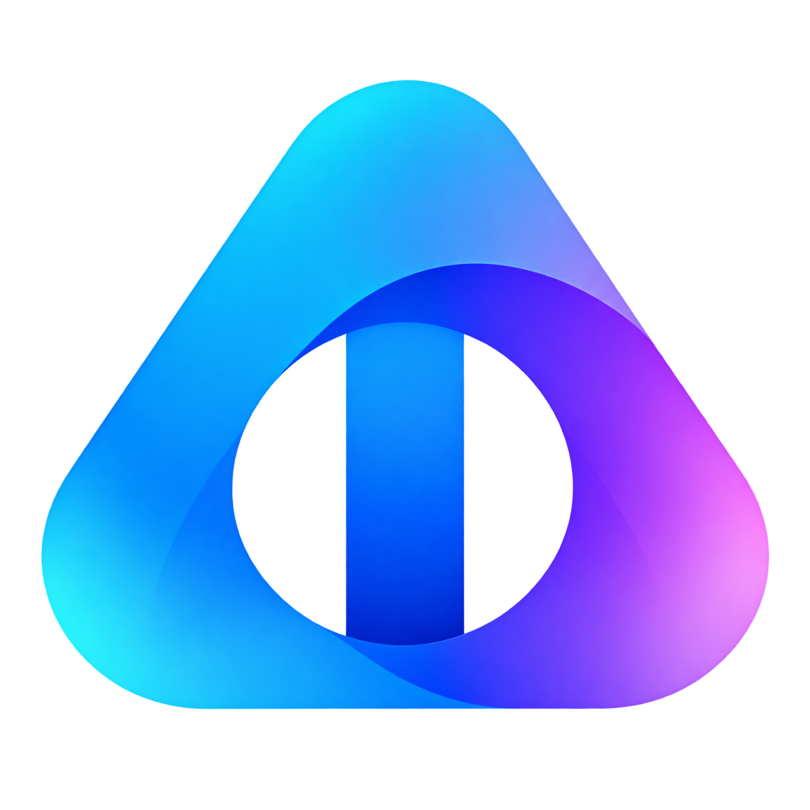

개발 배경 (Why)
자비로 다수의 하드웨어를 구매해 LLM 추론·파인튜닝을 연구하던 중, 커뮤니티와 사내 타 팀에서 실측 정보 부족으로 하드웨어 구매와 설정에 겪는 어려움을 목격하고 해결하고자 직접 개발·공개했습니다.
핵심 아키텍처 (What)
- 앱: Tauri 2 + Rust + React + llama.cpp 기반 런타임 제어
- 웹: Next.js + PostgreSQL + Cloudflare Turnstile
- 연동: OpenAPI & Zod 기반 benchmark-contracts 패키지 공유
검증된 결과 (Outcome)
- Windows 데스크톱 앱과 공개 벤치마크 웹사이트 배포 완료
- GGUF 모델 및 Vulkan/ROCm/CUDA/SYCL/OpenVINO 실측 지원
- 두 저장소 오픈소스 공개 및 지속 유지보수 중
실제 데스크톱 앱 실행 화면 (2026.09) · 클릭 시 확대
Tauri 2 · Rust 기반 로컬 벤치마크 엔진

벤치마크 측정 화면: 입력 길이, 동시 요청 수, TTFT(첫 토큰 시간), 생성 속도(토큰/초), 프로세스 RAM을 실측

모델 설정 화면: GPU 오프로드 레이어 수, 배치 크기 조절 및 실시간 VRAM/RAM 예상 사용량 시각화
엔지니어링 과제 및 해결 (Problem Solving)
과제 1
측정 조건의 편차를 고려한 공정한 결과 비교
해결
입력 길이와 동시 요청 수가 정확히 일치하는 기준점에서만 수치를 비교하도록 시스템을 설계했습니다. 모델·기기·런타임 정보를 함께 표기하고, 측정 방식이나 워크로드가 다를 경우 사용자에게 비교 유의사항 배지를 즉시 표시합니다.
과제 2
벤치마크 설정 격리 및 실측값 신뢰도 검증
해결
일상 채팅 설정과의 간섭을 막기 위해 벤치마크 전용 독립 llama-server 프로세스를 구동하고 캐시 재사용을 엄격히 차단했습니다. 토큰 카운트를 실시간 교차 검증하고 비정상 실패한 trial은 통계 평균에서 자동 제외했습니다.
설계 3
앱과 웹 간 데이터 스키마 통일 및 무계정 결과 관리
해결
검증 규칙과 OpenAPI 스키마를 benchmark-contracts 패키지로 공유했습니다. 복구 코드·복구 파일 또는 일회성 앱-웹 연동을 통해 계정 없이 공개 결과의 설명을 수정하거나 삭제할 수 있도록 했습니다.
데스크톱 앱 (Desktop)
React
TypeScript
Tauri 2 (Rust)
llama.cpp
Vite
웹 & 데이터 공개 (Web)
Next.js
React
TypeScript
PostgreSQL
Cloudflare Turnstile
Vercel
규격 및 인터페이스 (Contracts)
OpenAPI
Zod
공통 benchmark-contracts